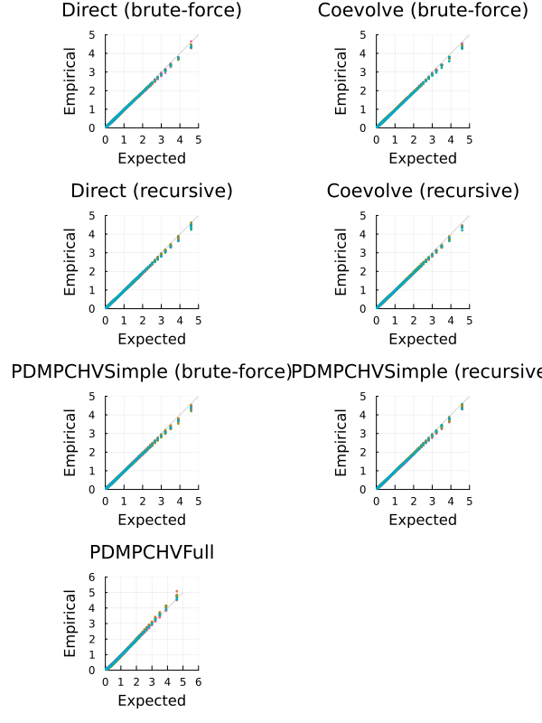
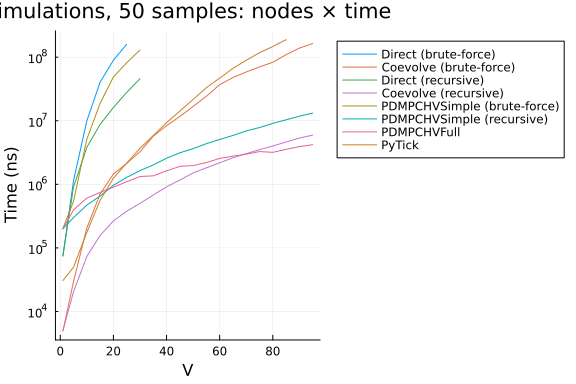

Multivariate Hawkes Model
using JumpProcesses, Graphs, Statistics, BenchmarkTools, Plots
using OrdinaryDiffEq: Tsit5
fmt = :png
width_px, height_px = default(:size);Model and example solutions
Let a graph with $V$ nodes, then the multivariate Hawkes process is characterized by $V$ point processes such that the conditional intensity rate of node $i$ connected to a set of nodes $E_i$ in the graph is given by:
\[ \lambda_i^\ast (t) = \lambda + \sum_{j \in E_i} \sum_{t_{n_j} < t} \alpha \exp \left[-\beta (t - t_{n_j}) \right]\]
This process is known as self-exciting, because the occurrence of an event $j$ at $t_{n_j}$ will increase the conditional intensity of all the processes connected to it by $\alpha$. The excited intensity then decreases at a rate proportional to $\beta$.
The conditional intensity of this process has a recursive formulation which can significantly speed the simulation. The recursive formulation for the univariate case is derived in Laub et al. [2]. We derive the compound case here. Let $t_{N_i} = \max \{ t_{n_j} < t \mid j \in E_i \}$ and
\[\begin{split} \phi_i^\ast (t) &= \sum_{j \in E_i} \sum_{t_{n_j} < t} \alpha \exp \left[-\beta (t - t_{N_i} + t_{N_i} - t_{n_j}) \right] \\ &= \exp \left[ -\beta (t - t_{N_i}) \right] \sum_{j \in E_i} \sum_{t_{n_j} \leq t_{N_i}} \alpha \exp \left[-\beta (t_{N_i} - t_{n_j}) \right] \\ &= \exp \left[ -\beta (t - t_{N_i}) \right] \left( \alpha + \phi^\ast (t_{N_i}) \right) \end{split}\]
Then the conditional intensity can be re-written in terms of $\phi_i^\ast (t_{N_i})$
\[ \lambda_i^\ast (t) = \lambda + \phi_i^\ast (t) = \lambda + \exp \left[ -\beta (t - t_{N_i}) \right] \left( \alpha + \phi_i^\ast (t_{N_i}) \right)\]
In Julia, we define a factory for the conditional intensity $\lambda_i$ which returns the brute-force or recursive versions of the intensity given node $i$ and network $g$.
function hawkes_rate(i::Int, g; use_recursion = false)
@inline @inbounds function rate_recursion(u, p, t)
λ, α, β, h, urate, ϕ = p
urate[i] = λ + exp(-β*(t - h[i]))*ϕ[i]
return urate[i]
end
@inline @inbounds function rate_brute(u, p, t)
λ, α, β, h, urate = p
x = zero(typeof(t))
for j in g[i]
for _t in reverse(h[j])
ϕij = α * exp(-β * (t - _t))
if ϕij ≈ 0
break
end
x += ϕij
end
end
urate[i] = λ + x
return urate[i]
end
if use_recursion
return rate_recursion
else
return rate_brute
end
endhawkes_rate (generic function with 1 method)Given the rate factory, we can create a jump factory which will create all the jumps in our model.
function hawkes_jump(i::Int, g; use_recursion = false)
rate = hawkes_rate(i, g; use_recursion)
urate = rate
@inbounds rateinterval(u, p, t) = p[5][i] == p[1] ? typemax(t) : 2 / p[5][i]
@inbounds lrate(u, p, t) = p[1]
@inbounds function affect_recursion!(integrator)
λ, α, β, h, _, ϕ = integrator.p
for j in g[i]
ϕ[j] *= exp(-β*(integrator.t - h[j]))
ϕ[j] += α
h[j] = integrator.t
end
integrator.u[i] += 1
end
@inbounds function affect_brute!(integrator)
push!(integrator.p[4][i], integrator.t)
integrator.u[i] += 1
end
return VariableRateJump(
rate,
use_recursion ? affect_recursion! : affect_brute!;
lrate,
urate,
rateinterval,
)
end
function hawkes_jump(u, g; use_recursion = false)
return [hawkes_jump(i, g; use_recursion) for i = 1:length(u)]
endhawkes_jump (generic function with 2 methods)We can then create a factory for Multivariate Hawkes JumpProblems. We can define two types of JumpProblems depending on the aggregator. The Direct() aggregator expects an ODEProblem since it cannot handle the SSAStepper with VariableRateJumps.
function f!(du, u, p, t)
du .= 0
nothing
end
function hawkes_problem(
p,
agg;
u = [0.0],
tspan = (0.0, 50.0),
save_positions = (false, true),
g = [[1]],
use_recursion = false,
)
oprob = ODEProblem(f!, u, tspan, p)
jumps = hawkes_jump(u, g; use_recursion)
jprob = JumpProblem(oprob, agg, jumps...; save_positions = save_positions)
return jprob
endhawkes_problem (generic function with 1 method)The Coevolve() aggregator knows how to handle the SSAStepper, so it accepts a DiscreteProblem.
function hawkes_problem(
p,
agg::Coevolve;
u = [0.0],
tspan = (0.0, 50.0),
save_positions = (false, true),
g = [[1]],
use_recursion = false,
)
dprob = DiscreteProblem(u, tspan, p)
jumps = hawkes_jump(u, g; use_recursion)
jprob =
JumpProblem(dprob, agg, jumps...; dep_graph = g, save_positions = save_positions)
return jprob
endhawkes_problem (generic function with 2 methods)Lets solve the problems defined so far. We sample a random graph sampled from the Erdős-Rényi model. This model assumes that the probability of an edge between two nodes is independent of other edges, which we fix at $0.2$. For illustration purposes, we fix $V = 10$.
V = 10
G = erdos_renyi(V, 0.2, seed = 9103)
g = [neighbors(G, i) for i = 1:nv(G)]10-element Vector{Vector{Int64}}:
[4, 7]
[8, 9]
[4, 5]
[1, 3]
[3]
[]
[1, 8, 9]
[2, 7]
[2, 7, 10]
[9]We fix the Hawkes parameters at $\lambda = 0.5 , \alpha = 0.1 , \beta = 2.0$ which ensures the process does not explode.
tspan = (0.0, 50.0)
u = [0.0 for i = 1:nv(G)]
p = (0.5, 0.1, 2.0)(0.5, 0.1, 2.0)Now, we instantiate the problems, find their solutions and plot the results.
algorithms = Tuple{Any, Any, Bool, String}[
(Direct(), Tsit5(), false, "Direct (brute-force)"),
(Coevolve(), SSAStepper(), false, "Coevolve (brute-force)"),
(Direct(), Tsit5(), true, "Direct (recursive)"),
(Coevolve(), SSAStepper(), true, "Coevolve (recursive)"),
]
let fig = []
for (i, (algo, stepper, use_recursion, label)) in enumerate(algorithms)
@info label
if use_recursion
h = zeros(eltype(tspan), nv(G))
urate = zeros(eltype(tspan), nv(G))
ϕ = zeros(eltype(tspan), nv(G))
_p = (p[1], p[2], p[3], h, ϕ, urate)
else
h = [eltype(tspan)[] for _ = 1:nv(G)]
urate = zeros(eltype(tspan), nv(G))
_p = (p[1], p[2], p[3], h, urate)
end
jump_prob = hawkes_problem(_p, algo; u, tspan, g, use_recursion)
sol = solve(jump_prob, stepper)
push!(fig, plot(sol.t, sol[1:V, :]', title=label, legend=false, format=fmt))
end
fig = plot(fig..., layout=(2,2), format=fmt, size=(width_px, 2*height_px/2))
end
Alternative libraries
We benchmark JumpProcesses.jl against PiecewiseDeterministicMarkovProcesses.jl and Python Tick library.
In order to compare with the PiecewiseDeterministicMarkovProcesses.jl, we need to reformulate our jump problem as a Piecewise Deterministic Markov Process (PDMP). In this setting, we have two options.
The simple version only requires the conditional intensity. Like above, we define a brute-force and recursive approach. Following the library's specification we define the following functions.
function hawkes_rate_simple_recursion(rate, xc, xd, p, t, issum::Bool)
λ, _, β, h, ϕ, g = p
for i in 1:length(g)
rate[i] = λ + exp(-β * (t - h[i])) * ϕ[i]
end
if issum
return sum(rate)
end
return 0.0
end
function hawkes_rate_simple_brute(rate, xc, xd, p, t, issum::Bool)
λ, α, β, h, g = p
for i in 1:length(g)
x = zero(typeof(t))
for j in g[i]
for _t in reverse(h[j])
ϕij = α * exp(-β * (t - _t))
if ϕij ≈ 0
break
end
x += ϕij
end
end
rate[i] = λ + x
end
if issum
return sum(rate)
end
return 0.0
end
function hawkes_affect_simple_recursion!(xc, xd, p, t, i::Int64)
_, α, β, h, ϕ, g = p
for j in g[i]
ϕ[j] *= exp(-β * (t - h[j]))
ϕ[j] += α
h[j] = t
end
end
function hawkes_affect_simple_brute!(xc, xd, p, t, i::Int64)
push!(p[4][i], t)
endhawkes_affect_simple_brute! (generic function with 1 method)Since this is a library for PDMP, we also need to define the ODE problem. In the simple version, we simply set it to zero.
function hawkes_drate_simple(dxc, xc, xd, p, t)
dxc .= 0
endhawkes_drate_simple (generic function with 1 method)Next, we create a factory for the Multivariate Hawkes PDMPCHVSimple problem.
import LinearAlgebra: I
using PiecewiseDeterministicMarkovProcesses
const PDMP = PiecewiseDeterministicMarkovProcesses
struct PDMPCHVSimple end
function hawkes_problem(p,
agg::PDMPCHVSimple;
u = [0.0],
tspan = (0.0, 50.0),
save_positions = (false, true),
g = [[1]],
use_recursion = true)
xd0 = Array{Int}(u)
xc0 = copy(u)
nu = one(eltype(xd0)) * I(length(xd0))
if use_recursion
jprob = PDMPProblem(hawkes_drate_simple, hawkes_rate_simple_recursion,
hawkes_affect_simple_recursion!, nu, xc0, xd0, p, tspan)
else
jprob = PDMPProblem(hawkes_drate_simple, hawkes_rate_simple_brute,
hawkes_affect_simple_brute!, nu, xc0, xd0, p, tspan)
end
return jprob
end
push!(algorithms, (PDMPCHVSimple(), CHV(Tsit5()), false, "PDMPCHVSimple (brute-force)"));
push!(algorithms, (PDMPCHVSimple(), CHV(Tsit5()), true, "PDMPCHVSimple (recursive)"));The full version requires that we describe how the conditional intensity changes with time which we derive below:
\[\begin{split} \frac{d \lambda_i^\ast (t)}{d t} &= -\beta \sum_{j \in E_i} \sum_{t_{n_j} < t} \alpha \exp \left[-\beta (t - t_{n_j}) \right] \\ &= -\beta \left( \lambda_i^\ast (t) - \lambda \right) \end{split}\]
function hawkes_drate_full(dxc, xc, xd, p, t)
λ, α, β, _, _, g = p
for i = 1:length(g)
dxc[i] = -β * (xc[i] - λ)
end
endhawkes_drate_full (generic function with 1 method)Next, we need to define the intensity rate and the jumps according to library's specification.
function hawkes_rate_full(rate, xc, xd, p, t, issum::Bool)
λ, α, β, _, _, g = p
if issum
return sum(@view(xc[1:length(g)]))
end
rate[1:length(g)] .= @view xc[1:length(g)]
return 0.0
end
function hawkes_affect_full!(xc, xd, p, t, i::Int64)
λ, α, β, _, _, g = p
for j in g[i]
xc[i] += α
end
endhawkes_affect_full! (generic function with 1 method)Finally, we create a factory for the Multivariate Hawkes PDMPCHVFull problem.
struct PDMPCHVFull end
function hawkes_problem(
p,
agg::PDMPCHVFull;
u = [0.0],
tspan = (0.0, 50.0),
save_positions = (false, true),
g = [[1]],
use_recursion = true,
)
xd0 = Array{Int}(u)
xc0 = [p[1] for i = 1:length(u)]
nu = one(eltype(xd0)) * I(length(xd0))
jprob = PDMPProblem(hawkes_drate_full, hawkes_rate_full, hawkes_affect_full!, nu, xc0, xd0, p, tspan)
return jprob
end
push!(algorithms, (PDMPCHVFull(), CHV(Tsit5()), true, "PDMPCHVFull"));The Python Tick library can be accessed with the PyCall.jl. We install the required Python dependencies with Conda.jl and define a factory for the Multivariate Hawkes PyTick problem.
const BENCHMARK_PYTHON::Bool = tryparse(Bool, get(ENV, "SCIMLBENCHMARK_PYTHON", "true"))
const REBUILD_PYCALL::Bool = tryparse(Bool, get(ENV, "SCIMLBENCHMARK_REBUILD_PYCALL", "true"))
struct PyTick end
if BENCHMARK_PYTHON
if REBUILD_PYCALL
using Pkg, Conda
# PyCall only works with Conda.ROOTENV
# tick requires python=3.8
Conda.add("python=3.8", Conda.ROOTENV)
Conda.add("numpy", Conda.ROOTENV)
Conda.pip_interop(true, Conda.ROOTENV)
Conda.pip("install", "tick", Conda.ROOTENV)
# rebuild PyCall to ensure it links to the python provided by Conda.jl
ENV["PYTHON"] = ""
Pkg.build("PyCall")
end
ENV["PYTHON"] = ""
using PyCall
@info "PyCall" PyCall.libpython PyCall.pyversion PyCall.conda
function hawkes_problem(
p,
agg::PyTick;
u = [0.0],
tspan = (0.0, 50.0),
save_positions = (false, true),
g = [[1]],
use_recursion = true,
)
λ, α, β = p
SimuHawkesSumExpKernels = pyimport("tick.hawkes")[:SimuHawkesSumExpKernels]
jprob = SimuHawkesSumExpKernels(
baseline = fill(λ, length(u)),
adjacency = [i in j ? α / β : 0.0 for j in g, i = 1:length(u), u = 1:1],
decays = [β],
end_time = tspan[2],
verbose = false,
force_simulation = true,
)
return jprob
end
push!(algorithms, (PyTick(), nothing, true, "PyTick"));
endChannels:
- conda-forge
Platform: linux-64
Collecting package metadata (repodata.json): ...working... done
Solving environment: ...working... failed
Error: failed process: Process(setenv(`/cache/julia-buildkite-plugin/depots
/5b300254-1738-4989-ae0a-f4d2d937f953/conda/3/x86_64/bin/conda install -q -
y python=3.8`,["BUILDKITE_UNBLOCKER_TEAMS=juliagpu-full-access:sciml-full-a
ccess", "DBUS_SESSION_BUS_ADDRESS=unix:path=/run/user/21581/bus", "BUILDKIT
E_PULL_REQUEST_REPO=", "BUILDKITE_SOURCE=webhook", "BUILDKITE_PLUGIN_COPPER
MIND_INPUTS_0=benchmarks/Jumps", "BUILDKITE_GIT_CLONE_FLAGS=-v", "BUILDKITE
_PLUGIN_CRYPTIC_BASE64_AGENT_PUBLIC_KEY_SECRET=LS0tLS1CRUdJTiBQVUJMSUMgS0VZ
LS0tLS0KTUlJQklqQU5CZ2txaGtpRzl3MEJBUUVGQUFPQ0FROEFNSUlCQ2dLQ0FRRUF0WHNKMzF
GbTFKN29IYzlveGZaWQpKY3FxRk5yaXRMUUhxaDVJUHNGS3YySis1K1FVQkZNYURjMHI3czZ3ND
NSMDFobkVNT1lYNDAreUVDT3h5bHErClo3dHdxWlNxS2U1MThwc0RyeWRna0xJNzRnQUVZWWNTZ
GdvTGt4YWpWNy9rb0hFTDgrczRKdFRVNUJ6d1RFdXAKTllTZGNQOFhQSmJLekY1RE5qdWJmeFA5
ZjdSN2x6SUx2NWl2Z2lxZTVtbUxGd1lwb0hTRVFVNXRlT09IQStLYwpjUDZ3K2d1Q0VxMUZFb0N
2MDRyaTFXaWpVZXorMytEWVM4UCtROGRxMGJYUWZUS1Vyc0thMkdnLzVmZ0h5Z0R1CmRHT2Zsdz
UvVEljR3VVbGNsd1hZb2tTRkpSWUJFa2pUOXBCZ2JNNEcyL2tXNGFmZ3d4bHNuN3VsUW5QNDZVL
zEKZFFJREFRQUIKLS0tLS1FTkQgUFVCTElDIEtFWS0tLS0tCg==", "BUILDKITE_ENV_FILE=/
tmp/job-env-01972aee-952f-4edf-9681-772a5d47bdbe861539779", "BUILDKITE_BUIL
D_NUMBER=3409", "BUILDKITE_GIT_CLONE_MIRROR_FLAGS=-v", "BUILDKITE_AGENT_DEB
UG=false", "BUILDKITE_AGENT_META_DATA_QUEUE=juliaecosystem", "BUILDKITE_PLU
GINS_PATH=/etc/buildkite-agent/plugins", "BUILDKITE_COMMAND_EVAL=true", "BU
ILDKITE_AGENT_META_DATA_SANDBOX_CAPABLE=true", "BUILDKITE_ORGANIZATION_SLUG
=julialang", "BUILDKITE_PLUGIN_COPPERMIND_INPUTS_1=src/**/*.jl", "BUILDKITE
_PIPELINE_PROVIDER=github", "BUILDKITE_AGENT_EXPERIMENT=resolve-commit-afte
r-checkout", "BUILDKITE_CONFIG_PATH=/etc/buildkite-agent/buildkite-agent.cf
g", "BUILDKITE_PIPELINE_TEAMS=sciml-full-access", "BUILDKITE_AGENT_META_DAT
A_CRYPTIC_CAPABLE=true", "BUILDKITE_AGENT_ACCESS_TOKEN=bkaj_eyJhbGciOiJIUzU
xMiJ9.eyJzdWIiOiIwMTk3MmFlZS05NTJmLTRlZGYtOTY4MS03NzJhNWQ0N2JkYmUiLCJhdWQiO
iIwMTk3MmQ5OC1iZTBiLTQ3ZDEtOTU4Ni05YjcwMzA1YjU2ZTAiLCJpc3MiOiJidWlsZGtpdGUi
LCJleHAiOjE3NDk0MjUwNzQsImlhdCI6MTc0ODgxNjY3NCwib3JnYW5pemF0aW9uX2lkIjoiZDQ
wOTgyM2MtNWZhNy00MWM4LTkwMzMtNzI2OWM1ZmRlNGYzIn0.K6PY1ZRJs8NbsdNVkdOENuXUKa
y1IClQ9Rppd_ZuAjDZ6AlKy6o-Em9c5InmY7Fp-8JuBhkgWXNkVBP0mnyHWA", "BUILDKITE_P
ULL_REQUEST_LABELS=", "BUILDKITE_PLUGIN_CRYPTIC_BASE64_SIGNED_JOB_ID_SECRET
=IPfgsEMt4nBS7nNc8v6kB5ewad0H+7c6nfMpufYSwFa9T5fxQEizYeOYH8pb8Eb+61bXsY+peS
3jbUDPcMxVTeYreoxiwLWVwW6Ut+kiX4ywwYSQ+PiH3cWKtFdIxmqXfpp/MrukL6caZb+JjfgdV
KSrKUR4HikI8txHZSgmRcQnwb6wUDT6Z0ehBVjzuE9LzrmqzPcjYWlOvUo1unLdFwoqjzAXoNe7
bVMprEbhjPO9ULe2vXAxsL1Rl0XUW3fMfozC1pmfZQzO7GJCp61vH9WiFoTjXrGnNdPL6wfUZXZ
Q3ui1Y4o3Y5ZnxeIE7RddRfituWJlkkw5D2J0nRg8nQ==", "BUILDKITE_PLUGIN_COPPERMIN
D_S3_PREFIX=s3://julialang-buildkite-artifacts/scimlbenchmarks", "BUILDKITE
_BUILD_CREATOR_EMAIL=accounts@chrisrackauckas.com", "XKB_CONFIG_ROOT=/cache
/julia-buildkite-plugin/depots/5b300254-1738-4989-ae0a-f4d2d937f953/artifac
ts/23d821271a00e164eb2b5c273985da44f9a831a1/share/X11/xkb", "BUILDKITE_SSH_
KEYSCAN=true", "BUILDKITE_UNBLOCKER_EMAIL=accounts@chrisrackauckas.com", "B
UILDKITE_PROJECT_SLUG=julialang/scimlbenchmarks-dot-jl", "BUILDKITE_INITIAL
_JOB_ID=01972aec-7855-409e-ab37-8d23dd60ba67", "BUILDKITE_BIN_PATH=/usr/bin
", "PWD=/cache/build/exclusive-amdci1-0/julialang/scimlbenchmarks-dot-jl",
"GRDIR=/cache/julia-buildkite-plugin/depots/5b300254-1738-4989-ae0a-f4d2d93
7f953/artifacts/9d01ece285704bef6238fd8461f65f1b63aeaece", "BUILDKITE_GIT_C
HECKOUT_FLAGS=-f", "BUILDKITE_COMPUTE_TYPE=self-hosted", "BUILDKITE_GIT_SUB
MODULES=true", "BUILDKITE_AGENT_META_DATA_OS=linux", "CI=true", "BUILDKITE_
STEP_KEY=benchmark-benchmarks-Jumps", "BUILDKITE_STEP_IDENTIFIER=benchmark-
benchmarks-Jumps", "BUILDKITE_PLUGIN_COPPERMIND_OUTPUTS_0=markdown/**/figur
es/*.png", "CONDA_PREFIX=/cache/julia-buildkite-plugin/depots/5b300254-1738
-4989-ae0a-f4d2d937f953/conda/3/x86_64", "BUILDKITE_PLUGIN_COPPERMIND_INPUT
S_2=./*.toml", "BUILDKITE_PLUGIN_COPPERMIND_OUTPUTS_3=markdown/**/*.svg", "
BUILDKITE_AGENT_PID=2", "BUILDKITE_LAST_HOOK_EXIT_STATUS=0", "BUILDKITE_AGE
NT_META_DATA_EXCLUSIVE=true", "BUILDKITE_PLUGIN_COPPERMIND_OUTPUTS_6=script
/**/*.jl", "BUILDKITE_BUILD_CREATOR=Christopher Rackauckas", "BUILDKITE_UNB
LOCKER=Christopher Rackauckas", "BUILDKITE_REBUILT_FROM_BUILD_ID=", "OPENBL
AS_DEFAULT_NUM_THREADS=1", "BUILDKITE_BRANCH=master", "JULIA_DEPOT_PATH=/ca
che/julia-buildkite-plugin/depots/5b300254-1738-4989-ae0a-f4d2d937f953", "B
UILDKITE_PLUGIN_COPPERMIND_OUTPUTS_5=pdf/**/*.pdf", "BUILDKITE_AGENT_DEBUG_
HTTP=false", "SHELL=/shells/bash", "BUILDKITE=true", "BUILDKITE_PLUGIN_CRYP
TIC_PRIVILEGED=true", "BUILDKITE_HOOKS_PATH=/hooks", "BUILDKITE_PIPELINE_DE
FAULT_BRANCH=master", "BUILDKITE_PLUGIN_NAME=COPPERMIND", "BUILDKITE_REBUIL
T_FROM_BUILD_NUMBER=", "HOME=/root", "BUILDKITE_PLUGIN_COPPERMIND_OUTPUTS_4
=notebook/**/*.ipynb", "BUILDKITE_S3_DEFAULT_REGION=us-east-1", "BUILDKITE_
TRIGGERED_FROM_BUILD_PIPELINE_SLUG=", "BUILDKITE_BUILD_CHECKOUT_PATH=/cache
/build/exclusive-amdci1-0/julialang/scimlbenchmarks-dot-jl", "BUILDKITE_SCR
IPT_PATH=# Clear out these secrets as they're not needed during the actual
build\nBUILDKITE_S3_ACCESS_KEY_ID=\"\" BUILDKITE_S3_SECRET_ACCESS_KEY=\"\"
./.buildkite/build_benchmark.sh \"benchmarks/Jumps\"\n", "INVOCATION_ID=4cc
4229329854fe0bfb6afa2496b48ef", "BUILDKITE_PLUGIN_COPPERMIND_OUTPUTS_2=mark
down/**/*.pdf", "LANG=en_US.UTF-8", "BUILDKITE_PIPELINE_NAME=SciMLBenchmark
s.jl", "SHLVL=3", "XDG_RUNTIME_DIR=/run/user/21581", "OLDPWD=/cache/julia-b
uildkite-plugin/depots/5b300254-1738-4989-ae0a-f4d2d937f953", "FONTCONFIG_F
ILE=/cache/julia-buildkite-plugin/depots/5b300254-1738-4989-ae0a-f4d2d937f9
53/artifacts/2a6bae048c28452d329375cbb7479499115e45ad/etc/fonts/fonts.conf"
, "BUILDKITE_PLUGIN_CONFIGURATION={\"inputs\":[\"benchmarks/Jumps\",\"src/*
*/*.jl\",\"./*.toml\"],\"outputs\":[\"markdown/**/figures/*.png\",\"markdow
n/**/*.md\",\"markdown/**/*.pdf\",\"markdown/**/*.svg\",\"notebook/**/*.ipy
nb\",\"pdf/**/*.pdf\",\"script/**/*.jl\"],\"s3_prefix\":\"s3://julialang-bu
ildkite-artifacts/scimlbenchmarks\"}", "BUILDKITE_BUILD_PATH=/cache/build",
"BUILDKITE_BUILD_AUTHOR_EMAIL=accounts@chrisrackauckas.com", "BUILDKITE_TI
MEOUT=10080", "BUILDKITE_GIT_MIRRORS_PATH=/cache/repos", "BUILDKITE_STRICT_
SINGLE_HOOKS=false", "BUILDKITE_LABEL=:hammer: benchmarks/Jumps", "FONTCONF
IG_PATH=/cache/julia-buildkite-plugin/depots/5b300254-1738-4989-ae0a-f4d2d9
37f953/artifacts/2a6bae048c28452d329375cbb7479499115e45ad/etc/fonts", "JOUR
NAL_STREAM=8:970893541", "BUILDKITE_AGENT_META_DATA_SANDBOX_JL=true", "BUIL
DKITE_BUILD_CREATOR_TEAMS=juliagpu-full-access:sciml-full-access", "BUILDKI
TE_PROJECT_PROVIDER=github", "QT_ACCESSIBILITY=1", "BUILDKITE_S3_SECRET_ACC
ESS_KEY=", "GKS_USE_CAIRO_PNG=true", "BUILDKITE_REPO_MIRROR=/cache/repos/ht
tps---github-com-SciML-SciMLBenchmarks-jl-git", "GIT_TERMINAL_PROMPT=0", "B
UILDKITE_JOB_ID=01972aee-952f-4edf-9681-772a5d47bdbe", "SYSTEMD_EXEC_PID=17
97210", "BUILDKITE_REDACTED_VARS=*_PASSWORD,*_SECRET,*_TOKEN,*_PRIVATE_KEY,
*_ACCESS_KEY,*_SECRET_KEY,*_CONNECTION_STRING", "BUILDKITE_BUILD_AUTHOR=Chr
istopher Rackauckas", "USER=sabae", "GKSwstype=100", "BUILDKITE_REPO=https:
//github.com/SciML/SciMLBenchmarks.jl.git", "BUILDKITE_GIT_FETCH_FLAGS=-v -
-prune --tags", "BUILDKITE_LOCAL_HOOKS_ENABLED=true", "MANAGERPID=59175", "
BUILDKITE_S3_ACCESS_KEY_ID=", "BUILDKITE_GIT_MIRRORS_LOCK_TIMEOUT=300", "BU
ILDKITE_AGENT_ID=01972d98-be0b-47d1-9586-9b70305b56e0", "BUILDKITE_GIT_MIRR
ORS_SKIP_UPDATE=false", "BUILDKITE_ARTIFACT_PATHS=", "BUILDKITE_BUILD_URL=h
ttps://buildkite.com/julialang/scimlbenchmarks-dot-jl/builds/3409", "BUILDK
ITE_MESSAGE=Merge pull request #1259 from SciML/jumps\n\nBump jumps tests",
"BUILDKITE_RETRY_COUNT=0", "LOGNAME=sabae", "JULIA_CPU_THREADS=128", "BUIL
DKITE_PLUGIN_JULIA_CACHE_DIR=/cache/julia-buildkite-plugin", "BUILDKITE_PLU
GIN_COPPERMIND_INPUT_HASH=5db57f718fd34b05f3c8371a16d76dab965bb0c2290233f4f
83648e323d053cb", "BUILDKITE_PLUGIN_CRYPTIC_BASE64_AGENT_PRIVATE_KEY_SECRET
=LS0tLS1CRUdJTiBSU0EgUFJJVkFURSBLRVktLS0tLQpNSUlFcFFJQkFBS0NBUUVBdFhzSjMxRm
0xSjdvSGM5b3hmWllKY3FxRk5yaXRMUUhxaDVJUHNGS3YySis1K1FVCkJGTWFEYzByN3M2dzQzU
jAxaG5FTU9ZWDQwK3lFQ094eWxxK1o3dHdxWlNxS2U1MThwc0RyeWRna0xJNzRnQUUKWVljU2Rn
b0xreGFqVjcva29IRUw4K3M0SnRUVTVCendURXVwTllTZGNQOFhQSmJLekY1RE5qdWJmeFA5Zjd
SNwpseklMdjVpdmdpcWU1bW1MRndZcG9IU0VRVTV0ZU9PSEErS2NjUDZ3K2d1Q0VxMUZFb0N2MD
RyaTFXaWpVZXorCjMrRFlTOFArUThkcTBiWFFmVEtVcnNLYTJHZy81ZmdIeWdEdWRHT2ZsdzUvV
EljR3VVbGNsd1hZb2tTRkpSWUIKRWtqVDlwQmdiTTRHMi9rVzRhZmd3eGxzbjd1bFFuUDQ2VS8x
ZFFJREFRQUJBb0lCQVFDTU5sVjRUbUlPWC8raQpHSDh3ZzVXekRSTy9MU1greXlFbzFHQ282NW9
lcDdDNDVNUjZXdUpFUzRKbjdSVkpoczVHSkg0cDhYdi9TYkdmCk9wVEFiTCt6VVdSSUFPNC9tMW
RSYTJhN1NzY1d4RDN6N0dOMkhtK3E5elBlSHAxd3pIZU5aZ29BR0htM3RyUU0KMGpidUczN09OS
G1YdGQ1MEYyVHo1TmcwN0hURkJwV3hMMjJwNm9aZzgyUEk0OXIrdUpWWmZ5MU5HZVRnaFA4cgp2
dVRVTVJIcldZa25YbUR1eDVSMHNIdDFoU2FvTXBFbSsrMWc1V09rSzZDTGFJbEV0ZitWVVBvR0p
iYlNYRzNJCmo5N1h5a3NGUDhGZ24wMWx4ZktGV1p4MXlnTVdsUm00SFNCTWVkc1FpWStqeG5Sd3
BtRnh5L2pIOVhFTUppT0wKQSsvVFdCbUJBb0dCQU52cXROQjRuVS9zODIxTU9oalRPTmtFOGNJO
ENxV1BRRTZXcEFOYVY5UkVVcGVCZzhmMgpjTXg2VFMweE9EU0JRUk9PRnNEUG9pc1E0VVRGQmFi
alBLTU41d2IzNFVKYmN4V0ZwcGlLUHJMa09Zdmtqb01VCkNSb1pKK05Lb253RWh5bWJ0TG0yMHh
mUUZCamY1R1QvMHJZUWcxUkN1OVllSmE0Z3NWYWtSNGh4QW9HQkFOTkIKMzhxenJhTTBDeHhrSn
ZkVmlTY3g2MFowN2g4OHFISy9SV2dVK3ZZaitwZy9ibXBwMmdiUXZkYTJxaS84UEl2OApSb0Jwc
mY2Y285TmdSa2JmY05xZmFnM1Z5SDhBNW1iUE1nK0s4YmFuKzlwU003WkREVW1sdU03R3ZRSW5O
VnBCCnBJcE1uWEk5eDZSSFlpOFF2MHhXOXcyUmpmS09TbElYZFlITjZwOUZBb0dCQUp0NXdwMkV
PRXR5VE9NZnVnOGsKL1pMSVlSY2VGYlRZb3ZFc3BRWE4wRHc4bFZ1UmNCWmx6M2R3bTdGd2s3am
pESndEbjJodklzcHBvNmxYMVZnWQpYUjAxemZocU5QSVI3em52QkVuaHF0UVViKzdNQmtqN1dEZ
0FRdWY1TXdpVXR1NGVxOVdFUUpjY1A2a2FXTUZpCjc1aFI4bGNXMnU5VTN2VE5Iak1QNzVheEFv
R0JBSm5HdExsZlMwQ21USVF4SHZBaE1rSDJvMVZaSGxCY25oMVEKdjV3QTBhRkVGVkNuczU4QVN
EVjMwd2d0VlBxeTkvdkoraVBWU1ZNeUFFcUlKUC9IKytVWDcySDh3UUk1ekh6Lwp5MmZtOHdYTG
g1ZW5DSDllbFppTGFsZ1I4RmxWNHc4OUF5R3NuVnNnUDJlRWtxTEI1UTRUcTZnVDBLakVETE51C
jRobEhvOGFsQW9HQUhBVGltTGRkS0JFTkN2MXZyNnZ0d3JCZGRCbWlGSWFwaVcvMk5acWxCTFp1
bEp6MEwzdCsKM3FvSUF0Uisxd2xpWkQwZGJnRGdVeVRMcnN5Y1RDSkZIczNIZTFXb3NCSzcxTml
ncFZhWEVzWnFpOHNENjlvUQo2QkFnaEdvbnNGbTEydzhhRGNDdm92WUxLTlhVV1BFT1c0akdvd2
k0Tmx4NGZidHlkYXpIUEdnPQotLS0tLUVORCBSU0EgUFJJVkFURSBLRVktLS0tLQo=", "BUILD
KITE_PIPELINE_SLUG=scimlbenchmarks-dot-jl", "BUILDKITE_SHELL=/bin/bash -e -
c", "BUILDKITE_UNBLOCKER_ID=e8e997cc-aa1b-4cc5-8244-2786f678c8d6", "BUILDKI
TE_PLUGINS_ENABLED=true", "LANGUAGE=en_US", "GKS_FONTPATH=/cache/julia-buil
dkite-plugin/depots/5b300254-1738-4989-ae0a-f4d2d937f953/artifacts/9d01ece2
85704bef6238fd8461f65f1b63aeaece", "BUILDKITE_AGENT_NAME=exclusive-amdci1.0
", "BUILDKITE_STEP_ID=01972aee-9502-491a-bb55-f9b5c4c2f5ac", "BUILDKITE_PLU
GIN_COPPERMIND_OUTPUTS_1=markdown/**/*.md", "BUILDKITE_TAG=", "OPENBLAS_MAI
N_FREE=1", "PATH=/cache/julia-buildkite-plugin/julia_installs/bin/linux/x64
/1.10/julia-1.10-latest-linux-x86_64/bin:/usr/local/sbin:/usr/local/bin:/us
r/sbin:/usr/bin:/sbin:/bin:/usr/games:/usr/local/games:/snap/bin:/usr/bin:/
usr/local/bin:/usr/bin:/bin", "GKS_ENCODING=utf8", "BUILDKITE_AGENT_META_DA
TA_NUM_CPUS=128", "BUILDKITE_TRIGGERED_FROM_BUILD_NUMBER=", "BUILDKITE_AGEN
T_META_DATA_CONFIG_GITSHA=2a413ab3", "BUILDKITE_COMMAND=# Clear out these s
ecrets as they're not needed during the actual build\nBUILDKITE_S3_ACCESS_K
EY_ID=\"\" BUILDKITE_S3_SECRET_ACCESS_KEY=\"\" ./.buildkite/build_benchmark
.sh \"benchmarks/Jumps\"\n", "LIBDECOR_PLUGIN_DIR=/cache/julia-buildkite-pl
ugin/depots/5b300254-1738-4989-ae0a-f4d2d937f953/artifacts/38e215c51e5c0f77
bc7a8813ba4586632a8fc750/lib/libdecor/plugins-1", "BUILDKITE_PLUGIN_VALIDAT
ION=false", "BUILDKITE_AGENT_META_DATA_ARCH=x86_64", "BUILDKITE_COMMIT_RESO
LVED=true", "CONDARC=/cache/julia-buildkite-plugin/depots/5b300254-1738-498
9-ae0a-f4d2d937f953/conda/3/x86_64/condarc-julia.yml", "FORCE_SANDBOX_MODE=
unprivileged", "BUILDKITE_TRIGGERED_FROM_BUILD_ID=", "TERM=xterm-256color",
"PYTHONIOENCODING=UTF-8", "BUILDKITE_PULL_REQUEST_BASE_BRANCH=", "BUILDKIT
E_PIPELINE_ID=5b300254-1738-4989-ae0a-f4d2d937f953", "_=/cache/julia-buildk
ite-plugin/julia_installs/bin/linux/x64/1.10/julia-1.10-latest-linux-x86_64
/bin/julia", "BUILDKITE_BUILD_ID=01972aec-7845-4aa2-b22d-b17b13f3e399", "BU
ILDKITE_AGENT_ENDPOINT=https://shard-009.agent.buildkite.com/v3", "BUILDKIT
E_PLUGINS=[{\"github.com/staticfloat/cryptic-buildkite-plugin#v2\":{\"files
\":[\".buildkite/secrets/token.toml\"],\"variables\":[\"BUILDKITE_S3_ACCESS
_KEY_ID=\\\"U2FsdGVkX1+x3xs1ZRRZRt3FmwFQmYYKnpV7o8xKkX5Ib6y0o5fv0+rskVAj+JK
u\\\"\",\"BUILDKITE_S3_SECRET_ACCESS_KEY=\\\"U2FsdGVkX1+LWh1yX7LsMBlecEJLc0
8eJrgOhurhd47CY1/jS3wCGVCQmS1t6f2j70spBoFdfc9kn2naj8HH5A==\\\"\",\"BUILDKIT
E_S3_DEFAULT_REGION=\\\"U2FsdGVkX18ccoE9FmtkwsCm1x0MLMBlN/FLcAyKkY4=\\\"\"]
}},{\"github.com/JuliaCI/julia-buildkite-plugin#v1\":{\"version\":\"1.10\"}
},{\"github.com/staticfloat/sandbox-buildkite-plugin\":{\"gid\":1000,\"uid\
":1000,\"rootfs_url\":\"https://github.com/thazhemadam/openmodelica-rootfs-
image/releases/download/v1.23.0/rootfs-openmodelica-v1.23.0.amd64.tar.gz\",
\"workspaces\":[\"/cache/julia-buildkite-plugin:/cache/julia-buildkite-plug
in\"],\"rootfs_treehash\":\"82970243dc4f188e599a976abc20951f4aba2912\"}},{\
"github.com/staticfloat/coppermind-buildkite-plugin#v1\":{\"inputs\":[\"ben
chmarks/Jumps\",\"src/**/*.jl\",\"./*.toml\"],\"outputs\":[\"markdown/**/fi
gures/*.png\",\"markdown/**/*.md\",\"markdown/**/*.pdf\",\"markdown/**/*.sv
g\",\"notebook/**/*.ipynb\",\"pdf/**/*.pdf\",\"script/**/*.jl\"],\"s3_prefi
x\":\"s3://julialang-buildkite-artifacts/scimlbenchmarks\"}}]", "BUILDKITE_
SOCKETS_PATH=/root/.buildkite-agent/sockets", "SANDBOX_PERSISTENCE_DIR=/cac
he/sandbox_persistence", "BUILDKITE_GIT_CLEAN_FLAGS=-ffxdq", "BUILDKITE_COM
MIT=848ec8038b09c87176e24a8b86bead39044aff63", "BUILDKITE_PULL_REQUEST=fals
e", "BUILDKITE_ORGANIZATION_ID=d409823c-5fa7-41c8-9033-7269c5fde4f3", "GKS_
QT=env LD_LIBRARY_PATH=/cache/julia-buildkite-plugin/depots/5b300254-1738-4
989-ae0a-f4d2d937f953/artifacts/715b660f53eb83c33e199a44ececfd8dc03f2a27/li
b:/cache/julia-buildkite-plugin/depots/5b300254-1738-4989-ae0a-f4d2d937f953
/artifacts/5acd766faaca59c3c1f3cfa67e2bf6dcf1e3e883/lib:/cache/julia-buildk
ite-plugin/depots/5b300254-1738-4989-ae0a-f4d2d937f953/artifacts/d4c2f2966f
2932e4870b0488c3b8a6b92b6641a9/lib:/cache/julia-buildkite-plugin/julia_inst
alls/bin/linux/x64/1.10/julia-1.10-latest-linux-x86_64/bin/../lib/julia:/ca
che/julia-buildkite-plugin/depots/5b300254-1738-4989-ae0a-f4d2d937f953/arti
facts/7f882b869c126a717e15be05453b83bd9135eab0/lib:/cache/julia-buildkite-p
lugin/depots/5b300254-1738-4989-ae0a-f4d2d937f953/artifacts/dc526f26fb179a3
f68eb13fcbe5d2d2a5aa7eeac/lib:/cache/julia-buildkite-plugin/depots/5b300254
-1738-4989-ae0a-f4d2d937f953/artifacts/1d90be1fb2a7f5023513bdcbb8abf7727ded
6044/lib:/cache/julia-buildkite-plugin/depots/5b300254-1738-4989-ae0a-f4d2d
937f953/artifacts/f8704eb01ec7508ae1f125b7ff89647997ed80cb/lib:/cache/julia
-buildkite-plugin/depots/5b300254-1738-4989-ae0a-f4d2d937f953/artifacts/e85
74c15e0152044b131e5d6956374f4b0bacce7/lib:/cache/julia-buildkite-plugin/dep
ots/5b300254-1738-4989-ae0a-f4d2d937f953/artifacts/4e7928c9107faa32c07a9cda
6bb7097690f3cdbb/lib:/cache/julia-buildkite-plugin/depots/5b300254-1738-498
9-ae0a-f4d2d937f953/artifacts/94475b26c9b6ff3bed68391232c55fd81a4a64b4/lib:
/cache/julia-buildkite-plugin/depots/5b300254-1738-4989-ae0a-f4d2d937f953/a
rtifacts/f5e52a42c85b68d1f7ee821d9d8c13a44c377956/lib:/cache/julia-buildkit
e-plugin/depots/5b300254-1738-4989-ae0a-f4d2d937f953/artifacts/96bc7b9ddb31
9d1a051535c85184aa2bf42dbd8b/lib:/cache/julia-buildkite-plugin/depots/5b300
254-1738-4989-ae0a-f4d2d937f953/artifacts/2a6bae048c28452d329375cbb74794991
15e45ad/lib:/cache/julia-buildkite-plugin/depots/5b300254-1738-4989-ae0a-f4
d2d937f953/artifacts/0a1006d282bce91b5cd408c714cbb95d3bb4f515/lib:/cache/ju
lia-buildkite-plugin/depots/5b300254-1738-4989-ae0a-f4d2d937f953/artifacts/
59eff635528e6914e1a96db241e950195574903b/lib:/cache/julia-buildkite-plugin/
depots/5b300254-1738-4989-ae0a-f4d2d937f953/artifacts/299dd9a174ebc497df2cf
4d30f1c6d10948c60ef/lib:/cache/julia-buildkite-plugin/depots/5b300254-1738-
4989-ae0a-f4d2d937f953/artifacts/f0557b9a3c2c4667444e8fc63c1fc9c2c5cb9e63/l
ib:/cache/julia-buildkite-plugin/depots/5b300254-1738-4989-ae0a-f4d2d937f95
3/artifacts/6da9d8475fd9fd2867e3bd1f46f3913c800a316f/lib:/cache/julia-build
kite-plugin/depots/5b300254-1738-4989-ae0a-f4d2d937f953/artifacts/a3f956e67
72ef4da35e128fd2a4477cf16fd3c84/lib:/cache/julia-buildkite-plugin/depots/5b
300254-1738-4989-ae0a-f4d2d937f953/artifacts/e2512e1cd411449b9bede7b4294c74
09c9973345/lib:/cache/julia-buildkite-plugin/depots/5b300254-1738-4989-ae0a
-f4d2d937f953/artifacts/ed48bfcf31d2d5ebdc0a681d1ed07e1e9f9f0377/lib:/cache
/julia-buildkite-plugin/depots/5b300254-1738-4989-ae0a-f4d2d937f953/artifac
ts/b8a470e4553346122607f94ec60d83c77f061cd6/lib:/cache/julia-buildkite-plug
in/depots/5b300254-1738-4989-ae0a-f4d2d937f953/artifacts/eb13375496c29fe521
01a0e6710c54ff87aa0e20/lib:/cache/julia-buildkite-plugin/depots/5b300254-17
38-4989-ae0a-f4d2d937f953/artifacts/5c030ff72c13f84fbbc8f93a146e34c6219a026
1/lib:/cache/julia-buildkite-plugin/depots/5b300254-1738-4989-ae0a-f4d2d937
f953/artifacts/bd1f25e7053ebc00ee7d82f3c5ec4cf1e9a51e17/lib:/cache/julia-bu
ildkite-plugin/depots/5b300254-1738-4989-ae0a-f4d2d937f953/artifacts/cf5d5f
8a6109be3f9c460a39768f57a3e53ff11d/lib:/cache/julia-buildkite-plugin/depots
/5b300254-1738-4989-ae0a-f4d2d937f953/artifacts/c8a20a2030f10b70947d8d2a6bf
f7f8b5f343fe9/lib:/cache/julia-buildkite-plugin/depots/5b300254-1738-4989-a
e0a-f4d2d937f953/artifacts/0631e2a6a31b5692eec7a575836451b16b734ec0/lib:/ca
che/julia-buildkite-plugin/depots/5b300254-1738-4989-ae0a-f4d2d937f953/arti
facts/4abd0521d210cb9e48ea5e711873ba34dc05fc70/lib:/cache/julia-buildkite-p
lugin/depots/5b300254-1738-4989-ae0a-f4d2d937f953/artifacts/0b5269206a6849e
48487ed04136c30b1f12443e7/lib:/cache/julia-buildkite-plugin/depots/5b300254
-1738-4989-ae0a-f4d2d937f953/artifacts/587de110e5f58fd435dc35b294df31bb7a75
f692/lib:/cache/julia-buildkite-plugin/depots/5b300254-1738-4989-ae0a-f4d2d
937f953/artifacts/fc239b3ff5739aeab252bd154fa4dd045fefe629/lib:/cache/julia
-buildkite-plugin/depots/5b300254-1738-4989-ae0a-f4d2d937f953/artifacts/a69
6e1e3e6b8d3c2c4b67609357ebc5c35eabde1/lib:/cache/julia-buildkite-plugin/dep
ots/5b300254-1738-4989-ae0a-f4d2d937f953/artifacts/85dab0a3f6b9cc2e5d61165e
e376bf46260812a4/lib:/cache/julia-buildkite-plugin/depots/5b300254-1738-498
9-ae0a-f4d2d937f953/artifacts/5b83972689fb7dea5e89326f1c0ba60d68e962fb/lib:
/cache/julia-buildkite-plugin/depots/5b300254-1738-4989-ae0a-f4d2d937f953/a
rtifacts/d007148a0838385ad09a5cc9f703679ddaffcf0b/lib:/cache/julia-buildkit
e-plugin/depots/5b300254-1738-4989-ae0a-f4d2d937f953/artifacts/1156a1c62f59
f758df3cda780d59a6c9cb3d7ae8/lib:/cache/julia-buildkite-plugin/depots/5b300
254-1738-4989-ae0a-f4d2d937f953/artifacts/36e9b0d89deb511d38dc1f51d370e2b44
5dd33ea/lib:/cache/julia-buildkite-plugin/depots/5b300254-1738-4989-ae0a-f4
d2d937f953/artifacts/7882cd1425db289a3e1703b83c7e8678e7f397d9/lib:/cache/ju
lia-buildkite-plugin/depots/5b300254-1738-4989-ae0a-f4d2d937f953/artifacts/
52d9b3e9e3507f7b2cf723af43d0e7f095e2edc7/lib:/cache/julia-buildkite-plugin/
depots/5b300254-1738-4989-ae0a-f4d2d937f953/artifacts/5b34e010ca7a3d88eeebe
cbc7a5b39ad72e33323/lib:/cache/julia-buildkite-plugin/depots/5b300254-1738-
4989-ae0a-f4d2d937f953/artifacts/38e215c51e5c0f77bc7a8813ba4586632a8fc750/l
ib:/cache/julia-buildkite-plugin/depots/5b300254-1738-4989-ae0a-f4d2d937f95
3/artifacts/65c5e10af6182e66ace3d62ab4d99114f9009e7e/lib:/cache/julia-build
kite-plugin/depots/5b300254-1738-4989-ae0a-f4d2d937f953/artifacts/353f5c4e0
91a41ba8da5297d1b4d13652aa7f775/lib:/cache/julia-buildkite-plugin/depots/5b
300254-1738-4989-ae0a-f4d2d937f953/artifacts/5cb2f5f8a13f3117c7770ed28b896e
ff85315555/lib:/cache/julia-buildkite-plugin/depots/5b300254-1738-4989-ae0a
-f4d2d937f953/artifacts/04915d2401d6f1b7b5e37382a0776ee2d20d343b/lib:/cache
/julia-buildkite-plugin/depots/5b300254-1738-4989-ae0a-f4d2d937f953/artifac
ts/f493bc948a41fd60ba4a5864a7127c7a2c8f863b/lib:/cache/julia-buildkite-plug
in/depots/5b300254-1738-4989-ae0a-f4d2d937f953/artifacts/55f9376d5c77106b48
13c4fb45a6b37a77d4d823/lib:/cache/julia-buildkite-plugin/depots/5b300254-17
38-4989-ae0a-f4d2d937f953/artifacts/d03aca19e34a4289ab7f118cf0b212ca46eb49b
e/lib:/cache/julia-buildkite-plugin/depots/5b300254-1738-4989-ae0a-f4d2d937
f953/artifacts/e3e8d2abb72b0145ee6de4b7be33e5a5c67e5f59/lib:/cache/julia-bu
ildkite-plugin/depots/5b300254-1738-4989-ae0a-f4d2d937f953/artifacts/45a076
ac2b0b5e528159c96142254106709ec982/lib:/cache/julia-buildkite-plugin/depots
/5b300254-1738-4989-ae0a-f4d2d937f953/artifacts/4db1e58d71ac6bbb35ecc832033
264c630d5d3b3/lib:/cache/julia-buildkite-plugin/depots/5b300254-1738-4989-a
e0a-f4d2d937f953/artifacts/21ed7b5e888fb9b18f44ba3f4652f14d8beda78c/lib:/ca
che/julia-buildkite-plugin/depots/5b300254-1738-4989-ae0a-f4d2d937f953/arti
facts/872754c2f795d19a3e2e205b2bbaea659f28d11e/lib:/cache/julia-buildkite-p
lugin/depots/5b300254-1738-4989-ae0a-f4d2d937f953/artifacts/7da37be2742b3d1
cfe1c14bf5bbd85aed4887f46/lib:/cache/julia-buildkite-plugin/depots/5b300254
-1738-4989-ae0a-f4d2d937f953/artifacts/c35cb3f6f3043a4e962fd56b61ad91b4adb5
57f7/lib:/cache/julia-buildkite-plugin/depots/5b300254-1738-4989-ae0a-f4d2d
937f953/artifacts/13befbe35cffe7da192c7001ece18b4be3aa3720/lib:/cache/julia
-buildkite-plugin/depots/5b300254-1738-4989-ae0a-f4d2d937f953/artifacts/cac
d8c147f866d6672e1aca9bb01fb919a81e96a/lib:/cache/julia-buildkite-plugin/dep
ots/5b300254-1738-4989-ae0a-f4d2d937f953/artifacts/b7dc5dce963737414a564aca
8d4b82ee388f4fa1/lib:/cache/julia-buildkite-plugin/depots/5b300254-1738-498
9-ae0a-f4d2d937f953/artifacts/0d364e900393f710a03a5bafe2852d76e4d2c2cd/lib:
/cache/julia-buildkite-plugin/depots/5b300254-1738-4989-ae0a-f4d2d937f953/a
rtifacts/1a2adcee7d99fea18ead33c350332626b262e29a/lib:/cache/julia-buildkit
e-plugin/depots/5b300254-1738-4989-ae0a-f4d2d937f953/artifacts/40eea58ff37e
cc8fb6f21f41079a33b511b3ff92/lib:/cache/julia-buildkite-plugin/depots/5b300
254-1738-4989-ae0a-f4d2d937f953/artifacts/79cc5446ced978de84b6e673e01da0ebf
dd6e4a5/lib:/cache/julia-buildkite-plugin/depots/5b300254-1738-4989-ae0a-f4
d2d937f953/artifacts/443e05ab3771707793cdec96039306b08738a626/lib:/cache/ju
lia-buildkite-plugin/depots/5b300254-1738-4989-ae0a-f4d2d937f953/artifacts/
0ecdcf67bd5c1db95253c03ab63d57e40d0b4886/lib:/cache/julia-buildkite-plugin/
depots/5b300254-1738-4989-ae0a-f4d2d937f953/artifacts/f03dd5ac03468009d5a99
bbfcdf336c2dc372de4/lib:/cache/julia-buildkite-plugin/depots/5b300254-1738-
4989-ae0a-f4d2d937f953/artifacts/8b45e0c5c7fbecd1e34f024cdc22fec4be4c7807/l
ib:/cache/julia-buildkite-plugin/depots/5b300254-1738-4989-ae0a-f4d2d937f95
3/artifacts/9d01ece285704bef6238fd8461f65f1b63aeaece/lib:/cache/julia-build
kite-plugin/julia_installs/bin/linux/x64/1.10/julia-1.10-latest-linux-x86_6
4/bin/../lib/julia:/cache/julia-buildkite-plugin/julia_installs/bin/linux/x
64/1.10/julia-1.10-latest-linux-x86_64/bin/../lib /cache/julia-buildkite-pl
ugin/depots/5b300254-1738-4989-ae0a-f4d2d937f953/artifacts/9d01ece285704bef
6238fd8461f65f1b63aeaece/bin/gksqt"]), ProcessExited(1)) [1]Now, we instantiate the problems, find their solutions and plot the results.
let fig = []
for (i, (algo, stepper, use_recursion, label)) in enumerate(algorithms[5:end])
@info label
if algo isa PyTick
_p = (p[1], p[2], p[3])
jump_prob = hawkes_problem(_p, algo; u, tspan, g, use_recursion)
jump_prob.reset()
jump_prob.simulate()
t = tspan[1]:0.1:tspan[2]
N = [[sum(jumps .< _t) for _t in t] for jumps in jump_prob.timestamps]
push!(fig, plot(t, N, title=label, legend=false, format=fmt))
elseif algo isa PDMPCHVSimple
if use_recursion
h = zeros(eltype(tspan), nv(G))
ϕ = zeros(eltype(tspan), nv(G))
_p = (p[1], p[2], p[3], h, ϕ, g)
else
h = [eltype(tspan)[] for _ in 1:nv(G)]
_p = (p[1], p[2], p[3], h, g)
end
jump_prob = hawkes_problem(_p, algo; u, tspan, g, use_recursion)
sol = solve(jump_prob, stepper)
push!(fig, plot(sol.time, sol.xd[1:V, :]', title=label, legend=false, format=fmt))
elseif algo isa PDMPCHVFull
_p = (p[1], p[2], p[3], nothing, nothing, g)
jump_prob = hawkes_problem(_p, algo; u, tspan, g, use_recursion)
sol = solve(jump_prob, stepper)
push!(fig, plot(sol.time, sol.xd[1:V, :]', title=label, legend=false, format=fmt))
end
end
fig = plot(fig..., layout=(2,2), format=fmt, size=(width_px, 2*height_px/2))
end
Correctness: QQ-Plots
We check that the algorithms produce correct simulation by inspecting their QQ-plots. Point process theory says that transforming the simulated points using the compensator should produce points whose inter-arrival duration is distributed according to the exponential distribution (see Section 7.4 [1]).
The compensator of any point process is the integral of the conditional intensity $\Lambda_i^\ast(t) = \int_0^t \lambda_i^\ast(u) du$. The compensator for the Multivariate Hawkes process is defined below.
\[ \Lambda_i^\ast(t) = \lambda t + \frac{\alpha}{\beta} \sum_{j \in E_i} \sum_{t_{n_j} < t} ( 1 - \exp \left[-\beta (t - t_{n_j}) \right])\]
function hawkes_Λ(i::Int, g, p)
@inline @inbounds function Λ(t, h)
λ, α, β = p
x = λ * t
for j in g[i]
for _t in h[j]
if _t >= t
break
end
x += (α / β) * (1 - exp(-β * (t - _t)))
end
end
return x
end
return Λ
end
function hawkes_Λ(g, p)
return [hawkes_Λ(i, g, p) for i = 1:length(g)]
end
Λ = hawkes_Λ(g, p)10-element Vector{Main.var"##WeaveSandBox#225".var"#Λ#33"{Int64, Vector{Vec
tor{Int64}}, Tuple{Float64, Float64, Float64}}}:
(::Main.var"##WeaveSandBox#225".var"#Λ#33"{Int64, Vector{Vector{Int64}}, T
uple{Float64, Float64, Float64}}) (generic function with 1 method)
(::Main.var"##WeaveSandBox#225".var"#Λ#33"{Int64, Vector{Vector{Int64}}, T
uple{Float64, Float64, Float64}}) (generic function with 1 method)
(::Main.var"##WeaveSandBox#225".var"#Λ#33"{Int64, Vector{Vector{Int64}}, T
uple{Float64, Float64, Float64}}) (generic function with 1 method)
(::Main.var"##WeaveSandBox#225".var"#Λ#33"{Int64, Vector{Vector{Int64}}, T
uple{Float64, Float64, Float64}}) (generic function with 1 method)
(::Main.var"##WeaveSandBox#225".var"#Λ#33"{Int64, Vector{Vector{Int64}}, T
uple{Float64, Float64, Float64}}) (generic function with 1 method)
(::Main.var"##WeaveSandBox#225".var"#Λ#33"{Int64, Vector{Vector{Int64}}, T
uple{Float64, Float64, Float64}}) (generic function with 1 method)
(::Main.var"##WeaveSandBox#225".var"#Λ#33"{Int64, Vector{Vector{Int64}}, T
uple{Float64, Float64, Float64}}) (generic function with 1 method)
(::Main.var"##WeaveSandBox#225".var"#Λ#33"{Int64, Vector{Vector{Int64}}, T
uple{Float64, Float64, Float64}}) (generic function with 1 method)
(::Main.var"##WeaveSandBox#225".var"#Λ#33"{Int64, Vector{Vector{Int64}}, T
uple{Float64, Float64, Float64}}) (generic function with 1 method)
(::Main.var"##WeaveSandBox#225".var"#Λ#33"{Int64, Vector{Vector{Int64}}, T
uple{Float64, Float64, Float64}}) (generic function with 1 method)We need a method for extracting the history from a simulation run. Below, we define such functions for each type of algorithm.
"""
Given an ODE solution `sol`, recover the timestamp in which events occurred. It
returns a vector with the history of each process in `sol`.
It assumes that `JumpProblem` was initialized with `save_positions` equal to
`(true, false)`, `(false, true)` or `(true, true)` such the system's state is
saved before and/or after the jump occurs; and, that `sol.u` is a
non-decreasing series that counts the total number of events observed as a
function of time.
"""
function histories(u, t)
_u = permutedims(reduce(hcat, u))
k = size(_u)[2]
# computes a mask that show when total counts change
mask = cat(fill(0.0, 1, k), _u[2:end, :] .- _u[1:end-1, :], dims = 1) .≈ 1
h = Vector{typeof(t)}(undef, k)
@inbounds for i = 1:k
h[i] = t[mask[:, i]]
end
return h
end
function histories(sol::S) where {S<:ODESolution}
# get u and permute the dimensions to get a matrix n x k with n obsevations and k processes.
if sol.u[1] isa ExtendedJumpArray
u = map((u) -> u.u, sol.u)
else
u = sol.u
end
return histories(u, sol.t)
end
function histories(sol::S) where {S<:PDMP.PDMPResult}
return histories(sol.xd.u, sol.time)
end
function histories(sols)
map(histories, sols)
endhistories (generic function with 4 methods)We also need to compute the quantiles of the empirical distribution given a history of events hs, the compensator Λ and the target quantiles quant.
import Distributions: Exponential
"""
Computes the empirical and expected quantiles given a history of events `hs`,
the compensator `Λ` and the target quantiles `quant`.
The history `hs` is a vector with the history of each process. Alternatively,
the function also takes a vector of histories containing the histories from
multiple runs.
The compensator `Λ` can either be an homogeneous compensator function that
equally applies to all the processes in `hs`. Alternatively, it accepts a
vector of compensator that applies to each process.
"""
function qq(hs, Λ, quant = 0.01:0.01:0.99)
_hs = apply_Λ(hs, Λ)
T = typeof(hs[1][1][1])
Δs = Vector{Vector{T}}(undef, length(hs[1]))
for k = 1:length(Δs)
_Δs = Vector{Vector{T}}(undef, length(hs))
for i = 1:length(_Δs)
_Δs[i] = _hs[i][k][2:end] .- _hs[i][k][1:end-1]
end
Δs[k] = reduce(vcat, _Δs)
end
empirical_quant = map((_Δs) -> quantile(_Δs, quant), Δs)
expected_quant = quantile(Exponential(1.0), quant)
return empirical_quant, expected_quant
end
"""
Compute the compensator `Λ` value for each timestamp recorded in history `hs`.
The history `hs` is a vector with the history of each process. Alternatively,
the function also takes a vector of histories containing the histories from
multiple runs.
The compensator `Λ` can either be an homogeneous compensator function that
equally applies to all the processes in `hs`. Alternatively, it accepts a
vector of compensator that applies to each process.
"""
function apply_Λ(hs::V, Λ) where {V<:Vector{<:Number}}
_hs = similar(hs)
@inbounds for n = 1:length(hs)
_hs[n] = Λ(hs[n], hs)
end
return _hs
end
function apply_Λ(k::Int, hs::V, Λ::A) where {V<:Vector{<:Vector{<:Number}},A<:Array}
@inbounds hsk = hs[k]
@inbounds Λk = Λ[k]
_hs = similar(hsk)
@inbounds for n = 1:length(hsk)
_hs[n] = Λk(hsk[n], hs)
end
return _hs
end
function apply_Λ(hs::V, Λ) where {V<:Vector{<:Vector{<:Number}}}
_hs = similar(hs)
@inbounds for k = 1:length(_hs)
_hs[k] = apply_Λ(hs[k], Λ)
end
return _hs
end
function apply_Λ(hs::V, Λ::A) where {V<:Vector{<:Vector{<:Number}},A<:Array}
_hs = similar(hs)
@inbounds for k = 1:length(_hs)
_hs[k] = apply_Λ(k, hs, Λ)
end
return _hs
end
function apply_Λ(hs::V, Λ) where {V<:Vector{<:Vector{<:Vector{<:Number}}}}
return map((_hs) -> apply_Λ(_hs, Λ), hs)
endapply_Λ (generic function with 5 methods)We can construct QQ-plots with a Plot recipe as following.
@userplot QQPlot
@recipe function f(x::QQPlot)
empirical_quant, expected_quant = x.args
max_empirical_quant = maximum(maximum, empirical_quant)
max_expected_quant = maximum(expected_quant)
upperlim = ceil(maximum([max_empirical_quant, max_expected_quant]))
@series begin
seriestype := :line
linecolor := :lightgray
label --> ""
(x) -> x
end
@series begin
seriestype := :scatter
aspect_ratio := :equal
xlims := (0.0, upperlim)
ylims := (0.0, upperlim)
xaxis --> "Expected"
yaxis --> "Empirical"
markerstrokewidth --> 0
markerstrokealpha --> 0
markersize --> 1.5
size --> (400, 500)
label --> permutedims(["quantiles $i" for i = 1:length(empirical_quant)])
expected_quant, empirical_quant
end
endNow, we simulate all of the algorithms we defined in the previous Section $250$ times to produce their QQ-plots.
let fig = []
for (i, (algo, stepper, use_recursion, label)) in enumerate(algorithms)
@info label
if algo isa PyTick
_p = (p[1], p[2], p[3])
elseif algo isa PDMPCHVSimple
if use_recursion
h = zeros(eltype(tspan), nv(G))
ϕ = zeros(eltype(tspan), nv(G))
_p = (p[1], p[2], p[3], h, ϕ, g)
else
h = [eltype(tspan)[] for _ in 1:nv(G)]
_p = (p[1], p[2], p[3], h, g)
end
elseif algo isa PDMPCHVFull
_p = (p[1], p[2], p[3], nothing, nothing, g)
else
if use_recursion
h = zeros(eltype(tspan), nv(G))
ϕ = zeros(eltype(tspan), nv(G))
urate = zeros(eltype(tspan), nv(G))
_p = (p[1], p[2], p[3], h, urate, ϕ)
else
h = [eltype(tspan)[] for _ = 1:nv(G)]
urate = zeros(eltype(tspan), nv(G))
_p = (p[1], p[2], p[3], h, urate)
end
end
jump_prob = hawkes_problem(_p, algo; u, tspan, g, use_recursion)
runs = Vector{Vector{Vector{Number}}}(undef, 250)
for n = 1:length(runs)
if algo isa PyTick
jump_prob.reset()
jump_prob.simulate()
runs[n] = jump_prob.timestamps
else
if ~(algo isa PDMPCHVFull)
if use_recursion
h .= 0
ϕ .= 0
else
for _h in h empty!(_h) end
end
if ~(algo isa PDMPCHVSimple)
urate .= 0
end
end
runs[n] = histories(solve(jump_prob, stepper))
end
end
qqs = qq(runs, Λ)
push!(fig, qqplot(qqs..., legend = false, aspect_ratio = :equal, title=label, fmt=fmt))
end
fig = plot(fig..., layout = (4, 2), fmt=fmt, size=(width_px, 4*height_px/2))
end
Benchmarking performance
In this Section we benchmark all the algorithms introduced in the first Section.
We generate networks in the range from $1$ to $95$ nodes and simulate the Multivariate Hawkes process $25$ units of time.
and simulate models in the range from $1$ to $95$ nodes for $25$ units of time. We fix the Hawkes parameters at $\lambda = 0.5 , \alpha = 0.1 , \beta = 5.0$ which ensures the process does not explode. We simulate $50$ trajectories with a limit of ten seconds to complete execution for each configuration.
tspan = (0.0, 25.0)
p = (0.5, 0.1, 5.0)
Vs = append!([1], 5:5:95)
Gs = [erdos_renyi(V, 0.2, seed = 6221) for V in Vs]
bs = Vector{Vector{BenchmarkTools.Trial}}()
for (algo, stepper, use_recursion, label) in algorithms
@info label
global _stepper = stepper
push!(bs, Vector{BenchmarkTools.Trial}())
_bs = bs[end]
for (i, G) in enumerate(Gs)
local g = [neighbors(G, i) for i = 1:nv(G)]
local u = [0.0 for i = 1:nv(G)]
if algo isa PyTick
_p = (p[1], p[2], p[3])
elseif algo isa PDMPCHVSimple
if use_recursion
global h = zeros(eltype(tspan), nv(G))
global ϕ = zeros(eltype(tspan), nv(G))
_p = (p[1], p[2], p[3], h, ϕ, g)
else
global h = [eltype(tspan)[] for _ in 1:nv(G)]
_p = (p[1], p[2], p[3], h, g)
end
elseif algo isa PDMPCHVFull
_p = (p[1], p[2], p[3], nothing, nothing, g)
else
if use_recursion
global h = zeros(eltype(tspan), nv(G))
global urate = zeros(eltype(tspan), nv(G))
global ϕ = zeros(eltype(tspan), nv(G))
_p = (p[1], p[2], p[3], h, urate, ϕ)
else
global h = [eltype(tspan)[] for _ = 1:nv(G)]
global urate = zeros(eltype(tspan), nv(G))
_p = (p[1], p[2], p[3], h, urate)
end
end
global jump_prob = hawkes_problem(_p, algo; u, tspan, g, use_recursion)
trial = try
if algo isa PyTick
@benchmark(
jump_prob.simulate(),
setup = (jump_prob.reset()),
samples = 50,
evals = 1,
seconds = 10,
)
else
if algo isa PDMPCHVFull
@benchmark(
solve(jump_prob, _stepper),
setup = (),
samples = 50,
evals = 1,
seconds = 10,
)
elseif algo isa PDMPCHVSimple
if use_recursion
@benchmark(solve(jump_prob, _stepper),
setup=(h .= 0; ϕ .= 0),
samples=50,
evals=1,
seconds=10,)
else
@benchmark(solve(jump_prob, _stepper),
setup=([empty!(_h) for _h in h]),
samples=50,
evals=1,
seconds=10,)
end
else
if use_recursion
@benchmark(
solve(jump_prob, _stepper),
setup = (h .= 0; urate .= 0; ϕ .= 0),
samples = 50,
evals = 1,
seconds = 10,
)
else
@benchmark(
solve(jump_prob, _stepper),
setup = ([empty!(_h) for _h in h]; urate .= 0),
samples = 50,
evals = 1,
seconds = 10,
)
end
end
end
catch e
BenchmarkTools.Trial(
BenchmarkTools.Parameters(samples = 50, evals = 1, seconds = 10),
)
end
push!(_bs, trial)
if (nv(G) == 1 || nv(G) % 10 == 0)
median_time =
length(trial) > 0 ? "$(BenchmarkTools.prettytime(median(trial.times)))" :
"nan"
println("algo=$(label), V = $(nv(G)), length = $(length(trial.times)), median time = $median_time")
end
end
endalgo=Direct (brute-force), V = 1, length = 50, median time = 98.719 μs
algo=Direct (brute-force), V = 10, length = 50, median time = 10.733 ms
algo=Direct (brute-force), V = 20, length = 50, median time = 84.722 ms
algo=Direct (brute-force), V = 30, length = 37, median time = 275.204 ms
algo=Direct (brute-force), V = 40, length = 7, median time = 1.551 s
algo=Direct (brute-force), V = 50, length = 4, median time = 3.240 s
algo=Direct (brute-force), V = 60, length = 2, median time = 5.686 s
algo=Direct (brute-force), V = 70, length = 1, median time = 10.190 s
algo=Direct (brute-force), V = 80, length = 1, median time = 15.298 s
algo=Direct (brute-force), V = 90, length = 1, median time = 20.870 s
algo=Coevolve (brute-force), V = 1, length = 50, median time = 3.340 μs
algo=Coevolve (brute-force), V = 10, length = 50, median time = 207.068 μs
algo=Coevolve (brute-force), V = 20, length = 50, median time = 1.310 ms
algo=Coevolve (brute-force), V = 30, length = 50, median time = 3.151 ms
algo=Coevolve (brute-force), V = 40, length = 50, median time = 8.119 ms
algo=Coevolve (brute-force), V = 50, length = 50, median time = 17.098 ms
algo=Coevolve (brute-force), V = 60, length = 50, median time = 29.820 ms
algo=Coevolve (brute-force), V = 70, length = 50, median time = 50.014 ms
algo=Coevolve (brute-force), V = 80, length = 50, median time = 73.230 ms
algo=Coevolve (brute-force), V = 90, length = 50, median time = 122.305 ms
algo=Direct (recursive), V = 1, length = 50, median time = 92.914 μs
algo=Direct (recursive), V = 10, length = 50, median time = 4.804 ms
algo=Direct (recursive), V = 20, length = 50, median time = 24.125 ms
algo=Direct (recursive), V = 30, length = 50, median time = 69.895 ms
algo=Direct (recursive), V = 40, length = 11, median time = 979.790 ms
algo=Direct (recursive), V = 50, length = 6, median time = 1.800 s
algo=Direct (recursive), V = 60, length = 4, median time = 3.087 s
algo=Direct (recursive), V = 70, length = 2, median time = 5.412 s
algo=Direct (recursive), V = 80, length = 2, median time = 8.048 s
algo=Direct (recursive), V = 90, length = 1, median time = 11.911 s
algo=Coevolve (recursive), V = 1, length = 50, median time = 3.830 μs
algo=Coevolve (recursive), V = 10, length = 50, median time = 74.740 μs
algo=Coevolve (recursive), V = 20, length = 50, median time = 263.803 μs
algo=Coevolve (recursive), V = 30, length = 50, median time = 493.786 μs
algo=Coevolve (recursive), V = 40, length = 50, median time = 899.168 μs
algo=Coevolve (recursive), V = 50, length = 50, median time = 1.485 ms
algo=Coevolve (recursive), V = 60, length = 50, median time = 2.202 ms
algo=Coevolve (recursive), V = 70, length = 50, median time = 3.112 ms
algo=Coevolve (recursive), V = 80, length = 50, median time = 4.023 ms
algo=Coevolve (recursive), V = 90, length = 50, median time = 5.461 ms
algo=PDMPCHVSimple (brute-force), V = 1, length = 50, median time = 71.079
μs
algo=PDMPCHVSimple (brute-force), V = 10, length = 50, median time = 5.005
ms
algo=PDMPCHVSimple (brute-force), V = 20, length = 50, median time = 41.739
ms
algo=PDMPCHVSimple (brute-force), V = 30, length = 50, median time = 113.93
7 ms
algo=PDMPCHVSimple (brute-force), V = 40, length = 35, median time = 285.70
5 ms
algo=PDMPCHVSimple (brute-force), V = 50, length = 17, median time = 602.09
8 ms
algo=PDMPCHVSimple (brute-force), V = 60, length = 10, median time = 1.083
s
algo=PDMPCHVSimple (brute-force), V = 70, length = 6, median time = 1.898 s
algo=PDMPCHVSimple (brute-force), V = 80, length = 4, median time = 2.879 s
algo=PDMPCHVSimple (brute-force), V = 90, length = 3, median time = 4.524 s
algo=PDMPCHVSimple (recursive), V = 1, length = 50, median time = 71.570 μs
algo=PDMPCHVSimple (recursive), V = 10, length = 50, median time = 343.667
μs
algo=PDMPCHVSimple (recursive), V = 20, length = 50, median time = 800.223
μs
algo=PDMPCHVSimple (recursive), V = 30, length = 50, median time = 1.507 ms
algo=PDMPCHVSimple (recursive), V = 40, length = 50, median time = 2.474 ms
algo=PDMPCHVSimple (recursive), V = 50, length = 50, median time = 3.620 ms
algo=PDMPCHVSimple (recursive), V = 60, length = 50, median time = 5.083 ms
algo=PDMPCHVSimple (recursive), V = 70, length = 50, median time = 7.069 ms
algo=PDMPCHVSimple (recursive), V = 80, length = 50, median time = 9.347 ms
algo=PDMPCHVSimple (recursive), V = 90, length = 50, median time = 12.089 m
s
algo=PDMPCHVFull, V = 1, length = 50, median time = 70.070 μs
algo=PDMPCHVFull, V = 10, length = 50, median time = 482.171 μs
algo=PDMPCHVFull, V = 20, length = 50, median time = 739.314 μs
algo=PDMPCHVFull, V = 30, length = 50, median time = 1.216 ms
algo=PDMPCHVFull, V = 40, length = 50, median time = 1.531 ms
algo=PDMPCHVFull, V = 50, length = 50, median time = 1.891 ms
algo=PDMPCHVFull, V = 60, length = 50, median time = 2.557 ms
algo=PDMPCHVFull, V = 70, length = 50, median time = 3.099 ms
algo=PDMPCHVFull, V = 80, length = 50, median time = 3.716 ms
algo=PDMPCHVFull, V = 90, length = 50, median time = 4.443 mslet fig = plot(
yscale = :log10,
xlabel = "V",
ylabel = "Time (ns)",
legend_position = :outertopright,
)
for (i, (algo, stepper, use_recursion, label)) in enumerate(algorithms)
_bs, _Vs = [], []
for (j, b) in enumerate(bs[i])
if length(b) == 50
push!(_bs, median(b.times))
push!(_Vs, Vs[j])
end
end
plot!(_Vs, _bs, label=label)
end
title!("Simulations, 50 samples: nodes × time")
end
References
[1] D. J. Daley and D. Vere-Jones. An Introduction to the Theory of Point Processes: Volume I: Elementary Theory and Methods. Probability and Its Applications, An Introduction to the Theory of Point Processes. Springer-Verlag, 2 edition. doi:10.1007/b97277.
[2] Patrick J. Laub, Young Lee, and Thomas Taimre. The Elements of Hawkes Processes. Springer International Publishing. doi:10.1007/978-3-030-84639-8.